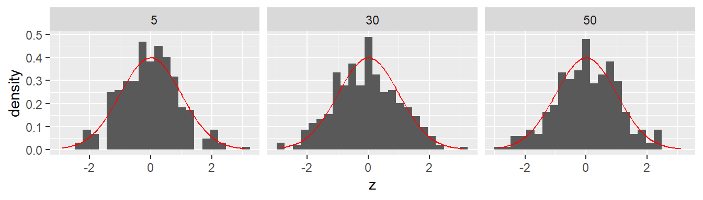
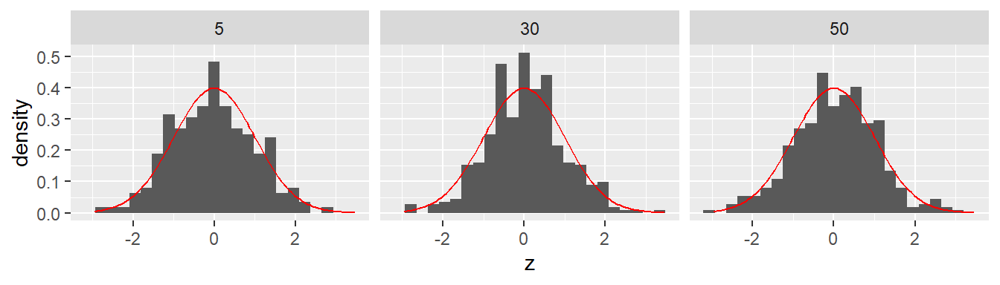
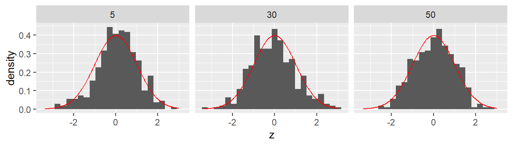

3 Verteilungen
3.1 Die Verteilung - 1. deep dive
Wir versuchen jetzt als erstes zu Verstehen was nochmal genau der Graph der Verteilung bedeutet. Auf der x-Achse werden die verschiedenen möglichen Werte der jeweiligen Statistik abgebildet. In unserem bisherigen Beispiel was das die Unterschiede \(D\) zwischen der Kontroll- und der Treatmentgruppe. Der Wert auf der y-Achse was zunächst die relative Häufigkeit was auch Sinn gemacht hatte, da wir nur eine bestimmte endliche Anzahl von möglichen Unterschieden \(D\) (ihr erinnert auch an die Zahl) vorliegen hatten. Was passiert aber wenn wir tatsächlich eine kontiuierliche Statistik haben, also eine Statistik die alle Werte innerhalb eines Intervalls einnehmen kann. Um den Fall zu verstehen fangen wir aber erst mal wieder mit einem einfachen Modell an.
3.1.1 Der Münzwurf
Wir fangen mit dem einfachsten Experiment an: dem Münzwurf. Beim Münzwurf haben wir zwei mögliche Ausgänge unseres Experiments, entweder Kopf oder Zahl. Wir gehen von einer perfekten Münze aus, d.h. die Münze ist vollkommen symmetrisch auf beiden System und keine der Seiten ist in irgendeiner Form schwere oder beeinflusst in einer Art den Ausgang.
Wenn wir uns an die Schule zurück erinnern, dann haben wir in Wahrscheinlichkeitstheorie schon mal was gehört, das im Fall gleichwahrscheinlicher Ereignisse die Wahrscheinlichkeit für ein bestimmtes Ereignis, mittels der Anzahl der vorteilhaften Ausgänge geteilt durch die Anzahl der möglichen Ausgänge berechnet wird. Also beim einmaligen Münzwurf haben wir zwei Ausgänge \(\{\text{Kopf}, \text{Zahl}\}\) und jeweils nur vorteilhaften Ausang als entweder Kopf oder Zahl, daher folgt daraus.
\[\begin{align} P(\text{Kopf}) &= \frac{1}{2} \\ P(\text{Zahl}) &= \frac{1}{2} \end{align}\]
Wenn wir das jetzt als Graphen in Form einer Wahrscheinlichkeitsverteilung abtragen, dann sieht das noch wenig interessant aus (siehe Abbildung 3.1). Das Muster ist aber trotzdem wichtig, damit wir später wissen worauf wir hier eigentlich schauen. Auf der x-Achse haben wir die möglichen Ausgänge, Kopf oder Zahl, und auf der y-Achse haben wir die Wahrscheinlichkeit abgetragen.
Da sich mit einem Münzwurf aber so wenig anfangen lässt, machen wir das Ganze jetzt etwas komplizierter und schauen uns an, wie unser Experiment aussieht wenn wir zwei Münzwwürfe uns anschauen. Rein operational, wir schmeißen unsere Münze in die Luft, schreiben uns das Ergebnis auf, und machen das Ganze noch ein zweites Mal und schreiben uns das Ergebnis auf. D.h. was auch immer im ersten Durchgang passiert, hat keine Auswirkungen auf das Ergebnis des zweiten Wurfs. Wir könnten auch zwei Münzen nehmen und beide gleichzeitig in die Luft werfen. Das wäre das gleiche Experiment. Welche Ausgänge haben wir jetzt beim zweimaligen Münzwurf? Zunächst einmal haben wir jetzt nicht mehr nur einen einzelnen Ausgang sondern wir haben ein Ausgangstupel, eine Liste mit zwei Elementen. Etwas motiviertes krizteln auf einem Schmierblatt wird wahrscheinlich relativ schnell zu folgender Tabelle führen (siehe Tabelle 3.1)
| Ausgang 1. Wurf | Ausgang 2. Wurf | Tupel |
|---|---|---|
| Kopf | Kopf | (Kopf, Kopf) |
| Kopf | Zahl | (Kopf, Zahl) |
| Zahl | Kopf | (Zahl, Kopf) |
| Zahl | Zahl | (Zahl, Zahl) |
Jetzt können wir uns wieder fragen, was die Wahrscheinlichkeit für die jeweiligen Ereignistupel ist. Eine direkte Methode wäre, wieder mittels der Symmetrie zu argumentieren. Es gibt vier verschiedene Ausgänge von denen jetzt keiner in irgendeiner Weise bevorzugt ist, daraus würde folgen das alle vier Ausgänge eine Wahrscheinlichkeit von \(P = \frac{1}{4}\) haben.
Eine weitere Möglichkeit wäre mit den Wahrscheinlichkeiten aus dem einfachen Wurf an das Problem heran zu gehen. Wir betrachten die beiden Münzwürfe jetzt wieder sequentiell (siehe Abbildung 3.2). Im ersten Schritt können wir entweder Kopf oder Zahl beobachten. Beide Wahrscheinlichkeiten sind \(P = \frac{1}{2}\). Darauf folgend können wir wieder zwei verschiedene Ausgänge beobachten, eben Kopf oder Zahl, wieder mit der Wahrscheinlichkeit \(P = \frac{1}{2}\).
flowchart TD
A[Start] --> B(Kopf)
A --> C(Zahl)
B --> D(Kopf)
B --> E(Zahl)
C --> F(Kopf)
C --> G(Zahl)
Da die Münzwürfe voneinander unabhängig sind und keinen Einfluss aufeinander ausüben, folgt daraus, dass die Wahrscheinlichkeiten für jede spezielle Folge von Kopf oder Zahl sich berechnet nach:
\[ P(\text{Ausgang}) = P(\text{1. Wurf}) \times P(\text{2. Wurf}) \tag{3.1}\]
Also in unseren Fall:
\[ P(\text{Ausgang}) = \frac{1}{2} \times \frac{1}{2} = \frac{1}{4} \tag{3.2}\]
Womit wir wieder beim gleichen Ergebnis wie vorher angekommen sind. Der Vorteil dieser Herangehensweise ist jedoch, dass wir damit eine einfache Möglichkeit gefunden haben das Ergebnis auf mehr als nur zwei Würfe zu verallgemeinern. Nehmen wir zum Beispiel den dreifachen Münzwurf, dann können wir die Wahrscheinlichkeit für die Folge \(P(\text{KKZ}) = \frac{1}{2}\times \frac{1}{2} \times \frac{1}{2} = \frac{1}{8}\) direkt angeben.
Bleiben wir aber erst noch mal kurz beim zweimaligen Münzwurf und schauen uns die Wahrscheinlichkeitsverteilung an. Hier stoßen wir nämlich auf ein Problem in der Darstellung. Wenn wir bei dem Muster aus Abbildung 3.1 bleiben wollen und auf der x-Achse die möglichen Ergnisse und auf der y-Achse die dazugehörende Wahrscheinlichkeit abtragen wollen, dann ist nicht ganz klar wie wir die Ergebnisse ordnen sollen. Eine mögliche Lösung ist in Abbildung 3.3 zu sehen.

Dies ist natürlich nicht die einzige Möglichkeit wie wir die Ereignisse ordenen können sondern wahrscheinlich ist jede der 24 möglichen Anordnungen gleich sinnig. Wir könnten auch beispielsweise nicht mehr die beiden einzelnen Ausgänge als Ereignisse wählen, sondern könnten zum Beispiel nur noch die Anzahl der Köpfe in unseren zwei Würfen zählen. Dies würde zu der folgenden Zuordnung führen (siehe Tabelle 3.2).
| Ereignisse | Anzahl der Köpfe |
|---|---|
| (Kopf, Kopf) | 2 |
| (Kopf, Zahl) | 1 |
| (Zahl, Kopf) | 1 |
| (Zahl, Zahl) | 0 |
Wir verliegen bei dieser Zuordnung nachtürlich die Information bei welchem Wurf die Zahl beobachtet wurde, aber eigentlich interessiert uns das sowieso nicht so brennend. In der Terminologie der Wahrscheinlichkeitstheorie wird die Anzahl der Köpfe als Zufallsvariable bezeichnet.
Definition 3.1 (Zufallsvariable) Eine Zufallsvariable ist die Abbildung eines Zufallsereignisses auf eine Zahl.
Anders dargestellt, ist eine Zufallsvariable eine Funktion, die einem Ereignis eine Zahl zuordnet (siehe Abbildung 3.4.
flowchart LR
A[Ereignis] --> B(Zahl)
Wenn wir uns jetzt die Wahrscheinlichkeiten für unsere Zufallsvariable anschauen, dann sehen wir aber, dass wir nicht mehr vier verschiedne Ausgänge haben, sondern nur noch drei und das die gleiche Wahrscheinlichkeit für nicht gleich sind.
| Ereignisse | Zufallsvariale | Wahrscheinlichkeit |
|---|---|---|
| (Zahl, Zahl) | Keine Köpfe | \(\frac{1}{4}\) |
| (Kopf, Zahl)(Zahl,Kopf) | 1 Kopf | \(\frac{1}{4} + \frac{1}{4} = \frac{1}{2}\) |
| (Kopf,Kopf) | 2 Köpfe | \(\frac{1}{4}\) |
Jetzt können wir wieder eine Wahrscheinlichkeitsverteilung für unsere Zufallsvariable abtragen (siehe Abbildung 3.5).

Nur um nebenbei noch einmal das offensichtliche Anzusprechen. Die Summe aller Wahrscheinlichkeiten aller Ereignisse muss \(1\) sein. Das sollte auch direkt einsichtig sein. Wenn ich alle möglichen Ereignisse abfrage also: “Was ist die Wahrscheinlichkeit das ich keine Köpfe, 1 Kopf oder 2 Köpfe beim zweimaligen Münzwurf erhalte”, dann sind das alle möglichen Ausgänge und dementsprechend sollte die Wahrscheinlichkeit dafür “1” sein oder mathematisch ausgedrückt:
\[ P(\text{0 Köpfe} \cup \text{1 Kopf} \cup \text{2 Köpfe}) = \frac{1}{4} + \frac{1}{2} + \frac{1}{4} = 1 \]
Jetzt gehen wir zum nächst komplizierteren Fall. Die Anzahl der Köpfe bei drei Münzwürfen. Welche Möglichkeiten gibt es hier? Nun bei drei Würfen kann entweder \(0, 1, 2\) oder \(3\) Kopf auftreten. Wenn wir die Wahrscheinlichkeiten für diese vier Ereignisse berechnen wollen, können wir aber nicht einfache \(\frac{1}{4}\) für jedes Ereignis als Wahrscheinlichkeit ansetzen (Warum?). Schauen wir uns erst einmal wieder die möglichen Tupel, oder auch die Elemenarereignisse, den wir erinnern uns, dass die Anzahl der Köpfe eine Zufallsvariable ist. Also eine Abbildung der 3-fach Tupel auf eine der Zahlen \(\{0, 1, 2, 3\}\).
| Elementarereignis | Anzahl Kopf |
|---|---|
| (Z,Z,Z) | \(0\) |
| (K,Z,Z) | \(1\) |
| (Z,K,Z) | \(1\) |
| (Z,Z,K) | \(1\) |
| (K,K,Z) | \(2\) |
| (Z,K,K) | \(2\) |
| (K,Z,K) | \(2\) |
| (K,K,K) | \(3\) |
Die Elementarereignisse in Tabelle 3.4 sind wieder alle gleichwahrscheinlich, daher können wir jetzt wieder einfache abzählen. Es gibt insgesamt \(8\) mögliche Ausgänge, davon haben jeiweils einer \(0\)-mal oder \(3\)-mal Kopf und jeweils \(3\) Ausgänge haben \(1\)-mal oder \(2\)-mal Kopf. Daraus folgt für die Wahrscheinlichkeitsfunktion (siehe Tabelle 3.5).
| Anzahl Kopf | P |
|---|---|
| \(0\) | \(\frac{1}{8}\) |
| \(1\) | \(\frac{3}{8}\) |
| \(2\) | \(\frac{3}{8}\) |
| \(3\) | \(\frac{1}{8}\) |
Das Ganze auch wieder als Graph (siehe ?fig-sts-coin-toss-3)

Bleiben wir noch einmal kurz bei dem Beispiel und versuchen uns die Wahrscheinlichkeiten anders herzuleiten. Sollten wir zum Beispiel einmal in die Verlegenheit kommen und 20 Münzwürfe untersuchen wollen, dann wir die Tabelle relative schnell relativ unhandlich.
Sei \(N\) die Anzahl der Würfe die wir durchführen. Wenn wir \(N\) kennen, wissen wir auch direkt welche möglichen Ausgänge bei dem Experiment möglich sind, nämlich alle Zahlen zwischen \(0\) und \(N\). \(0\) wenn wir kein Kopf geworfen haben, und \(N\) wenn wir nur Kopf geworfen haben. Dementsprechend sind alle Zahlen dazwischen auch noch möglich.
Schauen wir uns jetzt noch mal den dreimaligen Münzwurf an. Wenn wir kein Kopf werfen in \(3\) Würfen und betrachten die Würfe wieder sequentiell, dann haben wir \(\frac{1}{2}\) für die erste Zahl, \(\frac{1}{2}\) für die zweite Zahl und \(\frac{1}{2}\) für die dritte Zahl. Also insgesamt \(P(1 \text{ Kopf}) = \frac{1}{2} \times \frac{1}{2}\times \frac{1}{2} = \frac{1}{8}\). Aber diese Wahrscheinlichkeit hat ja jedes Elementarereignis egal ob es (K,K,K) oder (K,Z,K) oder (Z,Z,K) usw. ist. Jetzt haben wir aber das Problem, das wir für \(1\times\) oder \(2\times\) Kopf nicht nur eine Möglichkeit vorhanden diese Anzahl an Kopf zu beobachten. In Tabelle 3.4 haben wir bereits gezeigt, dass jeweils drei verschiedene Möglichkeiten, Kombination von Kopf und Zahl, möglich sind. D.h. wir haben jetzt ein Abzählproblem. Können wir irgendwie direkt bestimmen wie viele unterschiedliche Möglichkeiten es gibt?
Schauen wir uns den Fall \(1\times\) Kopf im 3-fach Tupel an. Auf wie viele Arten können wir 3-fach Tupel erzeugen mit nur einem Kopf. Nun, der Kopf ist entweder an der ersten, der zweiten oder der dritten Stelle und die jeweils anderen Position im Tupel sind mit Zahl besetzt. Das hört sich aber ähnlich wie ein Problem an wie wie etwas was wir schon vorher einmal gehört haben. Als wir uns die Anzahl der möglichen Stichproben aus unserer kleinen Welt angeschaut haben. Dort hatten wir das Problem, das wir bestimmen wollten auf wie viele Möglichkeiten wir zwei Stichproben mit jeweils drei Personen aus 20 Personen ziehen können. Dabei sind wir auf den Binomialkoeffizienten gestoßen Gleichung 1.3.
\[ \text{Anzahl} = \binom{n}{k} = \frac{n!}{k!(n-k)!} \]
Formal berechnet der Binomialkoeffizient die Möglichkeiten \(k\) Objekte aus \(n\) Objekten zu ziehen. Wenden wir das mal auf unseren Dreifachwurf an mit \(n = N = 3\) und \(k = 1\). Ausgeschrieben, auf wie viele Arten können wir \(1\times\) Kopf aus drei Positionen auswählen.
\[ \text{Kombinationen mit }1\times\text{ Kopf} = \binom{3}{1} = \frac{3!}{1!(3-1)!} = \frac{3\times 2 \times 1}{1\times 2 \times 1} = 3 \]
Passt. Probieren wir das auch direkt mit dem Ereignis \(2\times\) Kopf, also mit \(N = 3\) und \(k = 2\), aus.
\[ \text{Kombinationen mit } 2\times \text{ Kopf} = \binom{3}{2} = \frac{3!}{2!(3-2)!} = \frac{3\times 2 \times 1}{2\times 1 \times 1} = 3 \]
Passt auch. Jetzt müssen wir noch nur die beiden Fälle \(0\times\) und \(3\times\) Kopf behandeln. Wenn wir in einem Mathebuch den Binomialkoeffizienten nachschlagen, dann sind dort die beiden folgenden Definition zu finden für die Fälle \(k=0\) und \(k=n\).
\[\begin{align*} \binom{N}{N} &= 1 \\ \binom{N}{0} &= 1 \end{align*}\]
Wenn wir diese Definition für die anderen beiden verbleibenden Fälle anwenden, erhalten wir:
\[\begin{align*} \text{Kombinationen mit } 0\times \text{ Kopf} &= \binom{3}{0} = 1 \\ \text{Kombinationen mit } 3\times \text{ Kopf} &= \binom{3}{3} = 1 \end{align*}\]
Damit können wir nun für alle möglichen Ausgängen die Anzahl der möglichen Elementarereignisse mittels bestimmen. Allgemein erhalten wir dadurch eine Formel für die Wahrscheinlichkeiten der Ereignisse für den dreifachen Münzwurf.
\[ P(k \times \text{Kopf}) = \binom{3}{k} \frac{1}{2} \times \frac{1}{2} \times \frac{1}{2} = \binom{3}{k} \left(\frac{1}{2}\right)^3 \tag{3.3}\]
Weil wir natürlich sofort nach einer allgemeinen Lösung streben führen wir jetzt noch ein paar Symbole ein. Die Zufallsvariable, also die Anzahl von Kopf, bezeichnen wir mit dem Großbuchstaben \(Y\). Einen speziellen Ausgang bezeichnen wir mit dem Kleinbuchstaben \(y\). Damit würden allgemein die Wahrscheinlichkeit für irgend eines der Ereignisse mit \(Y = y\) bezeichnen. Und wenn wir sagen wir das Ereignis \(2\times\) Kopf bezeichnen, mit \(y = 2\). Also, die Wahrscheinlichkeit für \(3\times\) Kopf mit:
\[ P(Y = 3) = \binom{3}{3}\left(\frac{1}{2}\right)^3 \]
Die nächste Verallgemeinerung die wir Vornehmen ist dass wir für die Wahrscheinlichkeit das Kopf auftritt das Symbol \(p\) benutzen. So könnten wir auch modellieren, wenn wir eine unfaire Münze haben. Wenn jetzt aber \(p \neq \frac{1}{2}\) gilt, also zum Beispiel die Wahrscheinlichkeit für Kopf \(p = \frac{2}{3}\) wäre, dann ist die Wahrscheinlichkeit für Zahl nicht mehr die Gleiche wie für Kopf. Die Wahrscheinlichkeit für Zahl wäre dann \(1 - p\). Wenn wir für die Wahrscheinlichkeit für das Auftreten von Zahl das Symbol \(q\) einführen, muss die Wahrscheinlichkeit für Kopf oder Zahl gleich \(1\) sein, formal:
\[ p + q = 1 \] Daraus folgt, dass \(q = p - 1\). Wenn wir das auf unseren Münzwurf übertragen, müssen wir das dementsprechend berücksichtigen. Wir können uns aber zunutze machen, dass wir wissen wie viele Würfe durchgeführt wurden, nämlich \(N\), und wie viele davon Kopf waren, nämlich \(y\). Damit wissen wir automatisch auch die Anzahl von Zahl, \(N - y\). Jedes Kopf, hat die Wahrscheinlichkeit \(p\) und jede Zahl hat die Wahrscheinlichkeit \(q = 1 - p\). Das gilt unabhängig von der Reihenfolge, da z.B. die Wahrscheinlichkeiten \(KKZK\) und \(ZKKK\) gleich \(ppqp = qppp\) sind. Insgesamt haben wir \(y \times K\) und \((n-y) \times Z\) also \(p^y\) und \(q^{n-y}\). Diesen Zusammenhang können wir in eine Formel stecken.
\[\begin{equation} P(Y = y) = \binom{N}{y}p^y (1-p)^{N-y} = \binom{N}{y}p^y q^{N-y} \label{eq-binom-distribution} \end{equation}\]
Damit haben wir jetzt auch direkt unsere erste theoretische Verteilung kennengelernt, die in der Statistik eine zentrale Rolle spielt. Die Verteilung in Formel \(\eqref{eq-binom-distribution}\) wird als die Binomialverteilung bezeichnet. Da die Formel \(\eqref{eq-binom-distribution}\) von den Parametern \(p\) und \(n\) abhängt, wird die Binomialverteilung als eine Familie von Verteilungen bezeichnet.


Schauen wir uns aber noch mal ob wir mit den ganzen Symbolen wirklich unseren dreifachen Münzwurf zurückbekommen. Es gilt \(N = 3, p = \frac{1}{2}\). Daraus folgt das \(q = 1 - p = 1 - \frac{1}{2}=\frac{1}{2}\). Wenn wir uns noch an \(x^a x^b = x^{a+b}\) aus der Schule erinnern folgt:
\[\begin{align*} P(Y = 0) &= \binom{3}{0} \left(\frac{1}{2}\right)^{0}\left(\frac{1}{2}\right)^3 = \binom{3}{0}\left(\frac{1}{2}\right)^3 = 1 \left(\frac{1}{2}\right)^3 \\ P(Y = 1) &= \binom{3}{1} \left(\frac{1}{2}\right)^{1}\left(\frac{1}{2}\right)^2 = \binom{3}{1}\left(\frac{1}{2}\right)^3 = 3 \left(\frac{1}{2}\right)^3 \\ P(Y = 2) &= \binom{3}{0} \left(\frac{1}{2}\right)^{2}\left(\frac{1}{2}\right)^1 = \binom{3}{2}\left(\frac{1}{2}\right)^3 = 3 \left(\frac{1}{2}\right)^3 \\ P(Y = 3) &= \binom{3}{0} \left(\frac{1}{2}\right)^{3}\left(\frac{1}{2}\right)^0 = \binom{3}{3}\left(\frac{1}{2}\right)^3 = 1 \left(\frac{1}{2}\right)^3 \\ \end{align*}\]
Tatsächlich können wir unser Ergebnis von oben wiedergewinnen. Die Funktion der Binomialverteilung (Formel \(\eqref{eq-binom-distribution}\)) wird als Wahrscheinlichkeitsfuntion bezeichnet.
Definition 3.2 (Wahrscheinlichkeitsfunktion) Eine Wahrscheinlichkeitsfunktion ist eine mathematische Funktion, die die Wahrscheinlichkeiten für alle möglichen Ausgänge eines diskreten Zufallsexperiments angibt. Sie wird auch als diskrete Wahrscheinlichkeitsverteilung bezeichnet. Eine Wahrscheinlichkeitsfunktion ordnet jedem möglichen Ausgang \(x\) eines Experiments eine Wahrscheinlichkeit \(P(X = x)\) zu. Die Wahrscheinlichkeit liegt zwischen 0 und 1. Die Summe aller Wahrscheinlichkeiten für alle möglichen Ergebnisse muss gleich 1 sein. Eine Wahrscheinlichkeitsfunktion kann als Tabelle oder als Formel dargestellt werden
Für die Eigenschaften einer Verteilung gibt es einer weitere Darstellungsform, die Verteilungsfunktion.
Definition 3.3 (Verteilungsfunktion) Die Verteilungsfunktion gibt die Wahrscheinlichkeit \(P\) an, dass eine Zufallsvariable \(X\) einen Wert kleiner oder gleich einem bestimmten Wert \(x\) annimmt, formal \(P(X \leq x)\). Sie wird daher auch als kumulative Verteilungsfunktion bezeichnet.
Um die Definition der Verteilungsfunktion leichter nachzuvollziehen schauen wir uns das Ganze graphisch an (siehe Abbildung 3.8).


Die Wahrscheinlichkeitsfunktion gibt, wie schon bekannt, die Wahrscheinlichkeit für eine bestimmtes Ereignis an. Zum Beispiel, die Wahrscheinlichkeit bei \(p = 0.5, n = 10, 5\times\) Kopf zu sehen ist etwas unter \(0.25\). Wir könnten uns aber auch fragen, was die Wahrscheinlichkeit ist \(5\) oder weniger Köpfe zu beobachten. Diese Wahrscheinlichkeit setzt sic zusammen aus \(P(X = 0) + P(X = 1) + P(X = 2) + P(X = 3) + P(X = 4) + P(X = 5)\). Genau diesen Wert gibt die Verteilungsfunktion (siehe Abbildung 3.8 (b)) an.
Die beiden Funktionen sind dabei eineindeutig aufeinander abbildbar. Wenn die Verteilungsfunktion bekannt ist, dann kann daraus die Wahrscheinlichkeitsfunktion berechnet werden und anders herum wenn die Wahrscheinlichkeitsfunktion bekannt ist, dann kann, wie wir eben gesehen haben, die Verteilungsfunktion berechnet werden. Später bei den kontinuierlichen Verteilungen lernen wir noch die Dichtefunktion kennen, welche die Funktion der Wahrscheinlichkeitsfunktion einnimmt.
Für unser Ausgangsproblem ist jetzt aber mit der Verteilungsfunktion die Möglichkeit gegeben, das wir bestimmte Wahrscheinlichkeitsbereiche unserer Verteilung auszeichnen können. Denn die Wahrscheinlichkeitsfunktion liefert uns die Antwort auf die Frage, welchen Wertebereich wir für eine gegebene Verteilung eher nicht erwarten würden. Schauen wir uns zum Beispiel die Verteilung bei \(p = 0.5\) und \(n = 30\).

In Abbildung 3.9 sehen wir, dass wir zum Beispiel recht überrascht wären, wenn wir bei einem Durchgang von \(30\) Münzwürfen einen Wert von z.B. \(x = 29 \times\) Kopf beobachten würden. Es ist nicht unmöglich, aber es wäre schon überraschend. Diesen Grad der Überraschung können wir als Kriterium nehmen, um zu entscheiden ob wir eine bestimmt Beobachtung dazu verwenden würden diese als Evidenz für oder gegen eine bestimmte Verteilungsannahme zu sehen.
Setzen wir unser Kriterium z.B. bei 2% an. Die Entscheidung wird jetzt folgendermaßen getroffen. Wenn wir einen Wert beobachten der unter der Annahme einer fairen Münze die wir \(30\times\) aus dem Bereich der Werte von \(\leq2\%\) kommt. Dann sehen wir dies als gegen die Annahme an.
Im Folgenden werden vier verschiedene Verteilungen noch einmal etwas genauer vorgestellt, da diese Verteilung immer wieder im weiteren Verlauf auftauchen werden. Dies sind die Normalverteilung, die \(t\)-Verteilung, die \(\chi^2\)-Verteilung und die \(F\)-Verteilung. Dabei ist es, außer bei der Normalverteilung, weniger wichtig sich die Formeln einzuprägen sondern es soll eher darum gehen die Form der Verteilung, den Wertebereich und die Parameter der Verteilung zu kennen. Also zum Beispiel wird die Normalverteilung durch zwei Parameter \(\mu\) und \(\sigma^2\) spezifiziert während die \(\chi^2\)-Verteilung nur über einen einzelnen Parameter den Freiheitsgrad \(df\) bestimmt wird. Streng genommen wird auch nicht über vier Verteilungen gesprochen, sondern es handelt sich um jeweils Verteilungsfamilien, da es beispielsweise nicht die eine Normalverteilung gibt, sondern die Form wie eben beschrieben von den beiden Parametern abhängt. Dies gilt in gleich3em Maßen ebenfalls für die anderen behandelten Verteilungen.
3.2 Normalverteilung
Beginnen wir mit der Normalverteilung.
\[ f(x|\mu,\sigma^2) = \frac{1}{\sqrt{2 \pi \sigma^2}}e^{\left(-\frac{(x-\mu)^2}{2\sigma^2}\right)} \]
Die Normalverteilung ist eine symmetrische Verteilung und hat die uns schon oft begegnete Glockenform (siehe Abbildung 3.10).

Der Wertebereich der Normalverteilung ist \(X \in [-\infty, \infty]\). Das Maximum liegt genau beim Erwartungswert \(\mu\) der dementsprechend die Verteilung in die linken 50% und die rechten 50% unterteilt. Das Abfallen der Flanken wird über die Varianz \(\sigma^2\) geregelt. Wird \(\sigma^2\) größer, fallen die Flanken flacher ab, wird \(\sigma^2\) kleiner, fallen die Flanken schneller ab (siehe Abbildung 3.11).


Die Standardabweichung kann dazu verwendet werden, die Dichtfunktion in verschiedene Abschnitte zu unterteilen. Es gelten die folgenden Zusammenhänge (siehe Tabelle 3.6):
| \(x \in\) | P |
|---|---|
| \([-\sigma,\sigma]\) | 0.682 |
| \([-2\sigma,2\sigma]\) | 0.955 |
| \([-3\sigma,3\sigma]\) | 0.997 |
Übertragen auf den Dichtegraphen folgt (siehe Abbildung 3.12):

Wie in Tabelle 3.6 zu sehen ist, hat der Bereich \([-2\sigma, 2\sigma]\) eine Wahrscheinlichkeit von etwas über \(0.95\). Daher, wenn ich einen Bereich um den Erwartungswert \(\mu\) auszeichnen möchte, der genau eine Wahrscheinlichkeit von \(0.95\) hat, dann muss \(\sigma\) mit einem kleineren Wert als \(2\) multipliziert werden, nämlich \(1.96\). Das wird hier noch mal speziell erwähnt, da die Zahl \(1.96\) später immer wieder auftaucht. Formal:
\[P(x\in[\mu-1.96\sigma, \mu+1.96\sigma]) = 0.95\]
Anders herum, wenn es darum geht in Konfidenzintervall abzuschätzen, dann funktioniert auch die Faustregel, Teststatistik \(\pm 2\times\) Standardfehler.
3.2.1 Die Standardnormalverteilung
Eine Sonderrolle in der Familie der Normalverteilungen spielt die Standardnormalverteilung mit \(\mu = 0\) und \(\sigma^2 = 1\). Tatsächlich taucht diese so oft aus, dass die Mathematiker ihr ein eigenes Symbol spendiert haben \(\phi(x)\)
\[ \phi(x) = \mathcal{N}(\mu = 0, \sigma^2 = 1) \]
Im Fall der Standardnormalverteilung nehmen Tabelle 3.6 und Abbildung 3.12 besonders einfache Formen an da die Intervalle jeweils \([-1,1]\), \([-2,2]\) und \([-3,3]\) sind (siehe Abbildung 3.13).

3.2.2 z-Transformation
Es besteht mittels einer einfachen Möglichkeit jede beliebiege Normalverteilung \(\mathcal{N}(\mu,\sigma^2)\) auf die Standardnormalverteilung \(\mathcal{N}(0,1)\) abzubilden. Die Transformation wird als z-Transformation bezeichnet und hat die folgende Form:
\[ z = \frac{X - \mu_X}{\sigma_X} \tag{3.4}\]
D.h. der Mittelwert der Verteilung von \(X\) wird von X abgezogen und die Differenz wird durch die Standardabweichung der Population \(\sigma_X\) geteilt. Die Umkehrfunktion ist dementsprechend:
\[ X = \mu_X + z \sigma_X \tag{3.5}\]
3.2.3 Zentraler Grenzwertsatz
Die Normalverteilung spielt in der Wahrscheinlichkeitstheorie und der Statistik aus verschiedenen Gründen eine Spezialrolle. Ein Grund dafür ist der sogenannte Zentrale Grenzwertsatz, den wir hier nicht beweisen sondern nur kurz diskutieren.
Aussage 3.1 (Zentraler Grenzwertsatz) Seien \(X_1, X_2, \ldots, X_n\) n unabhängige, gleichverteilte Zufallsvariablen mit \(E[X_i]=\mu\) und \(Var[X_i]=\sigma^2\) endlich. \[ \lim_{n\to\infty}\frac{\bar{x} - \mu}{\frac{\sigma}{\sqrt{n}}}\ \rightarrow\ \mathcal{N}(\mu=0,\sigma^2=1) \]
In Worten besagt der Zentrale Grenzwertsatz, dass egal welche Ursprungsform die Verteilung einer Zufallsvariablen \(X\) hat, wenn die Stichprobengröße gegen unendlich geht, die konvergiert die Differenz des Stichprobenmittelwerts und des Mittelwert der Verteilung geteilt durch den Stichprobenstandardfehler gegen die Standardnormalverteilung. Grenzwertsätz sind manchmal etwas schwierig zu interpretieren, da hier noch keine Aussage gemacht wird, wie groß die Stichprobe sein muss, damit diese Abschätzung valide ist. In der Praxis wird oft ab einer gefühlt großen Stichproben diese Abschätzung als zulässig angesehen.
4 Verteilungszoo
4.1 t-Verteilung

4.2 \(\chi^2\)-Verteilung

4.3 F-Verteilung
